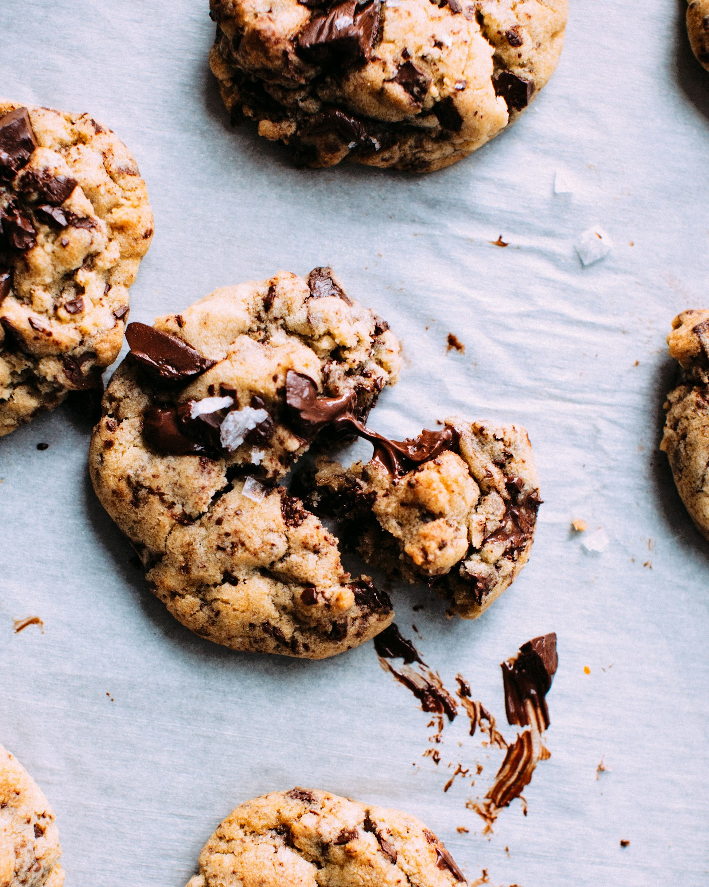
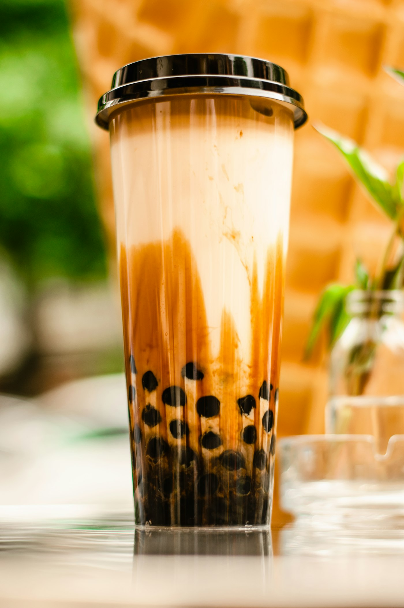

Drinks market feature
In Chinese internet discussion over the last two years, ready-to-drink tea has clearly changed status. It is no longer just a sleepy supermarket category sitting between mineral water and sugary soft drinks. Unsweetened bottled tea has become one of the clearest markers of how Chinese beverage consumption is being reorganized: lower sugar, lower explanation cost, more believable tea flavor, and stronger fit with everyday urban routines.
This matters because the category is not simply coming back. It is returning in a different market. Consumers have gone through several waves of sugar reduction, zero-sugar enthusiasm, sweetener-heavy beverages, functional drink hype, wellness waters, and social-media drink crazes. What many people now want is not the most dramatic product, but the one they can buy repeatedly without much mental negotiation. Unsweetened bottled tea fits that need almost perfectly.
It also sits on the same historical line as China’s modern tea-shop boom. Contemporary tea chains taught a huge number of consumers to notice tea base differences—oolong versus jasmine, floral versus roasted, clean versus milky, heavier versus lighter. Once that sensory education exists, bottled tea stops looking like boring leaf water and starts looking like a legitimate tea spectrum with style, preference, and habit built into it.

If we explain the current bottled tea boom only through health consciousness, we miss the deeper shift. China’s urban beverage market has become more skeptical and more practical at the same time. Consumers still care about sugar load, but they are less easily impressed by overbuilt wellness narratives, functional claims, and hyper-processed ideas of improvement. They increasingly reward products that feel straightforward.
Unsweetened bottled tea benefits from that shift because it asks for very little belief. It does not promise miracle function. It does not rely on heavy sweetness simulation. It simply says: this is tea, it is cold, it is portable, it is usually not sweet, and it leaves less psychological residue than many alternatives. In a market full of aggressively narrated products, that simplicity now reads as strength.
Another reason timing matters is that modern tea retail accidentally prepared consumers for this category. Tea chains spent years teaching large urban audiences to talk about tea bases, floral notes, roasted notes, lower sugar positioning, and real tea texture. So when those same consumers stand in front of a convenience-store shelf, they no longer see all unsweetened teas as one flat category. They begin to notice distinctions. That is when a category becomes culturally legible—not just purchasable, but discussable.
Oriental Leaf is the clearest case study because Chinese internet opinion around it has flipped so visibly. It was once mocked as overly plain, too bitter, too close to actual tea. Now it is often treated as a desk staple, commute drink, meal companion, or safe all-day default. That reversal did not happen because the product suddenly changed its essence. It happened because the market caught up with it.
Earlier, mass beverage expectations in China were still strongly built around sweetness, fruitiness, and immediate stimulation. In that context, a genuinely unsweetened tea could feel punishing. Today, after years of sugar reduction discourse and broader flavor education through tea chains, coffee, sparkling water, and niche drinks, the same too-real quality is interpreted very differently. What once felt austere can now feel trustworthy.
Oriental Leaf’s real strength is that it did not need to become a short-term novelty to win. It stayed remarkably stable in what it represented: a recognizably tea-forward, unsweetened bottled option with low explanation cost. For a high-frequency everyday product, stability is one of the rarest assets available. Consumers may experiment across the shelf, but they keep returning to something they feel they already understand.
It also carries a very specific kind of social meaning. Many consumers describe their first voluntary Oriental Leaf purchase with a half-joking line: I used to think this tasted terrible, now I get it. That is not just humor. It is a public narrative about taste maturity, restraint, and moving beyond constant sweetness. In that sense, the product functions not only as a drink but as a marker of changed consumer identity.
If Oriental Leaf proved that unsweetened bottled tea could work in China at scale, Suntory and newer brands show something more advanced: consumers no longer want a single acceptable sugar-free option. They want different styles inside the category. That means the market is moving from basic category education to internal segmentation.
Suntory’s long-term strength in China has been stylistic clarity. For many consumers, it is less about generic health and more about meal pairing, de-greasing, stronger oolong character, and a classic East Asian RTD tea profile. That matters because it shows where competition goes after a category stabilizes. The question is no longer simply whether a tea is unsweetened. The question becomes what kind of tea experience it offers, and in which routine it fits best.
Newer youth-facing brands gain traction not only because their packaging is more social-media friendly, but because they build on a now-proven foundation. They are not teaching the public that unsweetened tea can exist. They are competing over who can make it feel lighter, brighter, more contemporary, more photogenic, and more emotionally aligned with younger urban consumers. Once that happens, bottled tea is no longer just rational hydration. It becomes rational-plus-aesthetic daily consumption.


Many market summaries reduce the category to healthy consumption. That is true, but incomplete. The deeper advantage of unsweetened bottled tea is that it offers one of the lowest decision-cost drink solutions available to urban consumers. On an ordinary workday, people do not always want the most exciting beverage. Often they want something that is unlikely to feel like a mistake.
Bottled tea performs unusually well on that front. It has more flavor than plain water, less heaviness than milk tea, less threshold than coffee, fewer inflated claims than functional drinks, and less sweetness burden than juice. It may not dominate any single emotional axis, but it performs well enough across many of them. That is exactly how hard-currency consumer goods work: they are not the most thrilling purchase, but they are the easiest to repeat without regret.
This is also why the category is so well suited to convenience stores, supermarkets, vending machines, and travel retail. Shelf competition is not content-platform competition. A brand has only a few seconds to communicate. If the signals line up—unsweetened, tea, familiar brand, clean visual language, acceptable price—the purchase happens. Bottled tea often wins precisely because it needs so little explanation.
Sweeteners are not disappearing, but the phase in which sweetness engineering alone could feel futuristic and unquestionably superior has clearly weakened. Many consumers now have a more ambivalent relationship with heavily sweetener-driven drinks: technically zero sugar, but still very sweet; marketed as light, but sensorially persistent; modern in concept, yet not always genuinely drinkable in large quantities. That creates room for a different kind of satisfaction.
Unsweetened bottled tea offers that alternative by not trying to imitate sugar reward. Instead, it builds pleasure through aroma, roast, bitterness, dryness, floral lift, cooling clarity, and aftertaste. It is a more restrained form of satisfaction, but also one that can feel more believable. Consumers do not need to process the contradiction of why something tastes this sweet if it contains no sugar. The flavor story is simpler, and that simplicity is increasingly valued.
This puts bottled tea on the same psychological line as the made-to-order tea trends around real tea base, lower sugar, and cleaner ingredient narratives. The market is no longer chasing only more sweet or more technologically zero. It is searching for a new balance: lighter but not hollow, less sugar but not fake, more everyday but still sensorially distinct. Unsweetened tea lands right on that balance point.

I do not think the next phase of bottled tea growth will be driven by generic health messaging alone. Three things seem more important.
First, flavor segmentation will deepen. Consumers will increasingly want specific profiles: heavier roast, brighter jasmine, cleaner summer refreshment, better meal-pairing tea, more structured oolong, softer floral green tea. The brands that can make those differences legible and stable will gain stronger loyalty.
Second, routine binding will matter more. Suntory with greasy meals, Oriental Leaf with desks and commutes, other brands with fitness recovery, airports, meeting rooms, night snacks, or office vending machines—high-frequency drinks become powerful when they attach themselves to repeated life actions. The most successful products do not only win attention; they become habits.
Third, consumers will keep asking bottled tea to feel more recognizably like tea. That does not mean every brand has to become solemn or traditional. It means the market will keep rewarding products that feel less like generic tea-flavored beverage and more like something with an actual tea core. That is the same structural direction we already see in China’s wider drink culture through ingredient transparency and lighter made-to-order tea formats.
It is easy to dismiss bottled tea as somehow outside real tea culture, as if only gongfu brewing, teaware, terroir, and formal tasting deserve to count. That is too narrow. Bottled tea is not a substitute for traditional tea practice, but it is one of the most real, high-frequency, and socially widespread ways millions of urban Chinese consumers now live with tea. It may have less ritual, but it has scale. It may be less refined, but it is deeply embedded in daily life.
If large numbers of younger consumers today can talk about jasmine, oolong, roast, bitterness, aftertaste, and meal pairing at all, many of them are not starting from home brewing. They are starting from convenience-store shelves and modern retail drink culture. That entry point should not be underestimated. Bottled tea is not the enemy of tea culture. In many cases it is a low-threshold gateway back into tea attention.
Seen that way, the rise of unsweetened bottled tea is not evidence that tea has been cheapened. It is evidence that tea has found another massive interface with modern life: no kettle, no waiting, no brewing skill, no explanation required—yet still enough sensory structure to build preference, routine, and memory. That is one of the strongest forms of cultural survival tea can have inside a commercial urban society.
If you want to keep following this line, read Why new-style tea still belongs in the continuity of Chinese tea culture, Why low-sugar tea drinks got so hot, and Why ingredient transparency and real tea base became a new tea-drink flashpoint. Unsweetened bottled tea is not a side note. It is another major front in the same restructuring of Chinese beverage consumption.